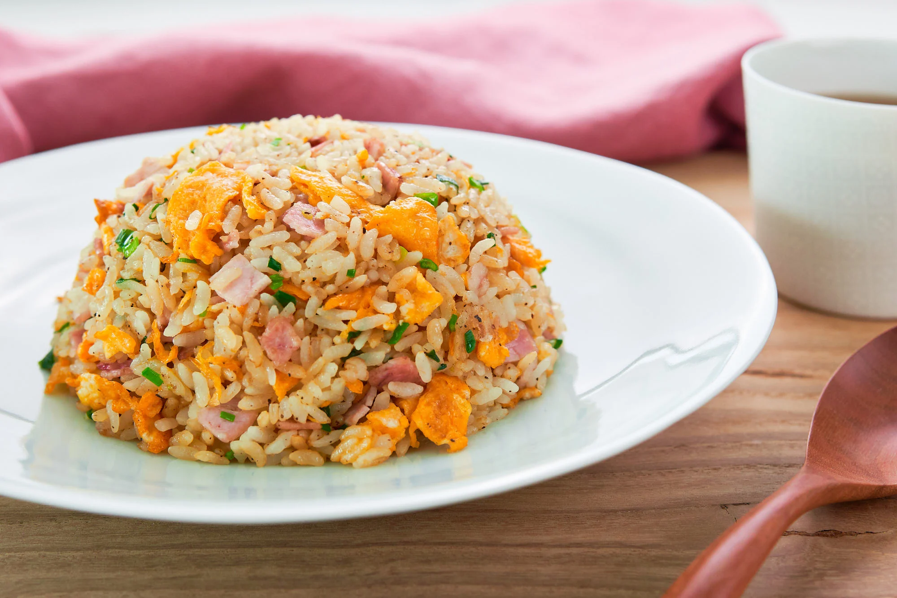

Yakimeshi

Japanese fried rice (Yakimeshi)
This classic Japanese Fried Rice (Yakimeshi) with ham, egg, and green onion is a delicious one-pan meal that you can whip up in under 20 minutes. It's bursting with flavor and perfect for a weeknight meal.
Unofficial ingredients
- 3 tablespoons neutral oil, divided
- 2 large eggs, beaten to blend
- 5 ounces 41/50 medium shrimp, peeled and deveined, cut into ¼-inch pieces, or 3 ounces Japanese Berkshire pork sausage
- 1 large carrot, finely chopped (about ¾ cup)
- 2 scallions, finely chopped
- 2 garlic cloves, finely chopped
- 3 cups cooked short-grain rice or brown rice, chilled
- 3/4 cup canned or frozen, thawed
- 3/4 cup peas, canned or frozen, thawed
- 1/2 teaspoon white pepper
- 1 teaspoon toasted sesame oil
- 1 tablespoon soy sauce
- Kosher salt
Instructions
- Heat a large skillet or wok over medium-high heat. Pour in 1 tablespoon of the neutral oil, then add the eggs and cook, stirring constantly, for 2 to 3 minutes, until just cooked through. Transfer the eggs to a plate.
- In the same pan over medium-high heat, warm the remaining 2 tablespoons of the neutral oil. Once the oil is hot and glistening, cook the shrimp, carrots, scallions, and garlic, stirring, for about 2 minutes, until the carrots are darker in color and softened.
- Add the rice, stirring and cutting through the rice, mixing with the carrot and shrimp mixture, and coating the rice in the seasoned oil, for about 1 minute, until warmed through. Mix in the corn, peas, and pepper.
- Push the rice off to the side of the frying pan and pour the sesame oil into the empty side. Once the oil is hot, stir the rice mixture into the oil.
- Push the rice off to the side again and pour the soy sauce into the empty side, making sure the soy sauce is sizzling before mixing and incorporating into the rice. Stir in the reserved eggs until combined, then serve immediately.